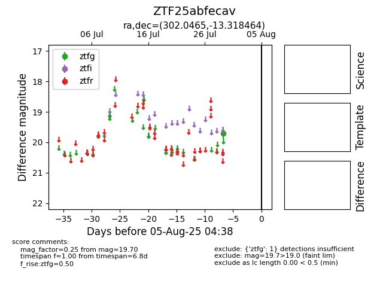

Target ZTF25abfecav at 2025-08-05 04:38, see:
FINK: fink-portal.org/ZTF25abfecav
Lasair: lasair-ztf.lsst.ac.uk/objects/ZTF25abfecav
ALeRCE: alerce.online/object/ZTF25abfecav
alt names
ZTF25abfecav (ztf,fink)
coordinates:
equatorial (ra, dec) = (302.0465,-13.31846)
galactic (l, b) = (29.2469,-22.93413)
photometry
last ztfg=19.70
1 ztfg detections
